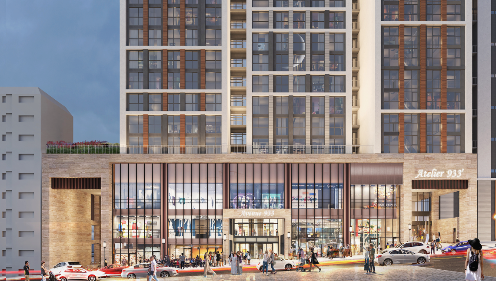

1. 상가분양은 ‘새 건물인가’보다 수요가 이어질지를 봐야 합니다
상가분양을 검토할 때 처음 눈에 들어오는 것은 건물의 외관과 분양금액입니다. 하지만 실제로 장기간 보유하거나 직접 운영하는 상가라면 더 중요한 것은 이 공간을 이용할 고객이 꾸준히 존재할 수 있는지입니다. 상권은 한 번 형성되면 그대로 유지되는 것이 아니라 주변 주거, 업무, 교통, 입점 업종의 변화에 따라 계속 움직입니다.
따라서 부산진구 아틀리에 933을 볼 때도 단순히 신축 상업시설이라는 점보다 양정역 이용객, 주변 거주민, 행정기관과 오피스 수요가 어떻게 겹치는지를 함께 보는 것이 좋습니다. 상가분양은 건물 한 칸을 사는 것이 아니라 그 공간을 이용할 수요와 동선을 함께 선택하는 일에 가깝습니다.
2. 양정역 직통 연결은 ‘역세권’이라는 표현보다 실제 동선으로 확인합니다
제공된 안내자료에는 AVENUE 933이 지하철 1호선 양정역과 직통 연결되는 상업시설로 안내되어 있습니다. 역에서 가까운 상가는 많지만 고객 입장에서 중요한 것은 실제로 얼마나 편하게 이동할 수 있는지입니다. 횡단보도를 건너야 하는지, 외부 도로를 돌아가야 하는지, 날씨의 영향을 받는지에 따라 체감 접근성은 달라질 수 있습니다.
특히 병의원, 교육, 뷰티, 생활서비스처럼 예약 또는 목적형 방문이 많은 업종은 고객이 처음 방문할 때 쉽게 찾을 수 있어야 하고, 재방문할 때도 이동이 번거롭지 않아야 합니다. 따라서 양정역 직통 연결이라는 조건은 단순 홍보문구로 보기보다 연결 통로에서 실제 호실까지의 이동 방향을 도면과 현장에서 함께 확인하는 것이 중요합니다.

※ 본 사이트 내에 사용된 이미지는 소비자의 이해를 돕기 위해 참고용으로 제작된 것으로 실제 시공 시 다를 수 있습니다.
3. 약 6만5천 세대의 주거 배후는 ‘반복 소비’ 관점에서 봐야 합니다
제공된 안내자료에는 양정 상권 내 약 6만5천 세대가 거주하는 것으로 안내되어 있습니다. 주거 배후는 상가에서 중요한 요소지만 세대수 자체가 매출을 보장하는 것은 아닙니다. 병원, 약국, 카페, 식당, 미용, 교육, 생활서비스처럼 생활과 연결된 업종이 얼마나 반복적으로 이용될 수 있는지를 함께 생각해야 합니다.
상가분양을 장기적으로 본다면 일시적으로 몰리는 유동보다 생활권 안에서 꾸준히 발생하는 소비가 더 중요할 수 있습니다. 양정역 이용수요와 주거수요가 동시에 존재하는지, 내 업종의 주 고객층이 실제로 이 생활권과 맞는지 확인하는 과정이 필요합니다.
4. 행정타운과 오피스 수요가 주거수요와 겹친다는 점도 살펴봅니다
안내자료에는 부산시청과 교육청 등 행정타운을 포함해 약 5만3천 명 규모의 오피스 인구가 제시되어 있으며, 관공서 24개, 교육기관 77개, 금융기관 40개가 밀집한 것으로 안내되어 있습니다. 이런 구조는 주거민뿐 아니라 평일 낮 시간대에도 행정기관 방문객과 직장인 수요가 움직일 가능성을 살펴볼 수 있다는 의미입니다.
출퇴근 시간에는 양정역 이용객, 평일 낮에는 업무와 행정 목적의 방문, 저녁과 주말에는 주거 중심의 생활소비가 발생할 수 있습니다. 상가를 선택할 때 한 종류의 고객층에만 의존하지 않는지를 보는 이유가 여기에 있습니다.
5. 몰형 상업시설은 내 점포 앞 유동만 보지 않아야 합니다
AVENUE 933은 여러 업종이 함께 구성되는 몰형 상업시설로 안내되어 있습니다. 몰형 상가에서는 한 가지 목적을 가지고 방문한 고객이 건물 안의 다른 업종을 함께 이용할 가능성이 있습니다. 병원 방문 후 카페나 약국을 이용하거나, 식사를 위해 방문한 고객이 생활서비스나 뷰티 업종을 함께 이용하는 식의 시너지를 기대할 수 있습니다.
다만 몰형 상업시설이라고 해서 모든 호실이 같은 효과를 받는 것은 아닙니다. 어떤 집객시설이 어느 층에 들어오는지, 고객이 어떤 순서로 이동하는지, 상층부까지 자연스럽게 올라오는 구조인지 확인해야 합니다. 전체 입점 구성과 내 호실의 위치를 함께 보는 것이 좋습니다.

※ 본 사이트 내에 사용된 이미지는 소비자의 이해를 돕기 위해 참고용으로 제작된 것으로 실제 시공 시 다를 수 있습니다.
6. 주차환경은 ‘대수’보다 실제 이용 편의를 확인하는 방식이 안전합니다
차량 방문이 많은 업종은 주차가 가능한지뿐 아니라 실제로 이용하기 편한지가 중요합니다. 병의원, 가족 단위 식음, 교육, 뷰티와 같이 고객 체류시간이 긴 업종은 주차 후 점포까지의 이동이 복잡하면 재방문 만족도에 영향을 줄 수 있습니다.
현재 사이트에서는 변동 가능성이 있는 구체적인 주차대수나 무료시간을 기준으로 안내하기보다 쾌적한 주차환경과 차량 방문 고객의 이동 편의를 확인하는 방향으로 정리했습니다. 실제 계약이나 입점 검토 단계에서는 최신 운영기준을 별도로 확인하는 것이 좋습니다.
7. 같은 건물 안에서도 호실의 조건은 크게 달라질 수 있습니다
상가분양에서 가장 중요한 단계 중 하나는 실제 호실 비교입니다. 같은 평수라도 에스컬레이터 바로 앞인지, 복도 안쪽인지, 엘리베이터에서 잘 보이는지, 주차장에서 올라왔을 때 자연스럽게 지나가는 위치인지에 따라 체감 가치가 달라질 수 있습니다.
점포 전면 폭, 간판 노출, 코너 여부, 급배수와 전기조건도 업종에 따라 중요도가 달라집니다. 직접 운영 목적이라면 내 업종이 필요한 조건을 먼저 정하고, 임대 목적이라면 향후 어떤 업종이 이 호실을 선호할지를 역으로 생각해보는 방식이 좋습니다.
8. 메디컬 상가라면 일반 상가보다 설비 확인이 더 중요합니다
제공된 자료에는 내과, 소아청소년과, 피부과, 정형외과, 치과, 한의원, 이비인후과 등이 추천 진료과목으로 제시되어 있습니다. 병의원은 일반 상가보다 전기 용량, 급배수, 환기, 장비 반입, 하중, 소방 등 확인할 항목이 많습니다.
또한 환자와 보호자가 지하철이나 주차장에서 진료실까지 얼마나 편하게 이동할 수 있는지, 처음 방문한 환자가 병원을 쉽게 찾을 수 있는지도 중요합니다. 메디컬 입점은 단순히 ‘병원이 들어갈 수 있다’는 수준이 아니라 진료과별 실제 운영조건을 기준으로 검토해야 합니다.

※ 본 사이트 내에 사용된 이미지는 소비자의 이해를 돕기 위해 참고용으로 제작된 것으로 실제 시공 시 다를 수 있습니다.
9. 임대수익 목적이라면 임차인이 오래 영업할 수 있는지를 봅니다
상가를 직접 운영하지 않고 임대 목적으로 분양받는 경우에는 분양가와 예상 임대료만 계산하는 방식으로는 부족합니다. 향후 어떤 업종이 들어올 가능성이 높은지, 그 업종이 감당할 수 있는 관리비와 임대료 수준은 어느 정도인지, 공실이 발생했을 때 다른 업종으로 전환하기 쉬운 구조인지 함께 살펴봐야 합니다.
제공자료에는 임대조건, 관리비, 렌트프리 협의와 관련한 안내가 포함되어 있습니다. 실제 적용 여부와 범위는 계약 시점과 호실에 따라 달라질 수 있으므로 최신 조건을 별도로 확인하는 것이 좋습니다.
10. 결국 ‘내 업종에 맞는 호실’이 좋은 상가입니다
부산진구 아틀리에 933의 상가분양을 검토한다면 분양가격만 먼저 확인하기보다 호실 위치, 전용면적, 전면 폭, 에스컬레이터 동선, 엘리베이터 접근, 주차환경, 급배수, 전기, 간판 노출, 예상 임차업종을 함께 비교하는 것이 좋습니다.
좋은 상가는 유명한 건물이라는 이유만으로 결정되지 않습니다. 직접 운영하려는 업종 또는 향후 임대하려는 업종과 잘 맞는 호실인지, 고객이 찾고 다시 방문하기 편한지, 장기적으로 다른 업종에도 활용할 수 있는지를 확인한 뒤 최종 판단하는 것이 중요합니다.